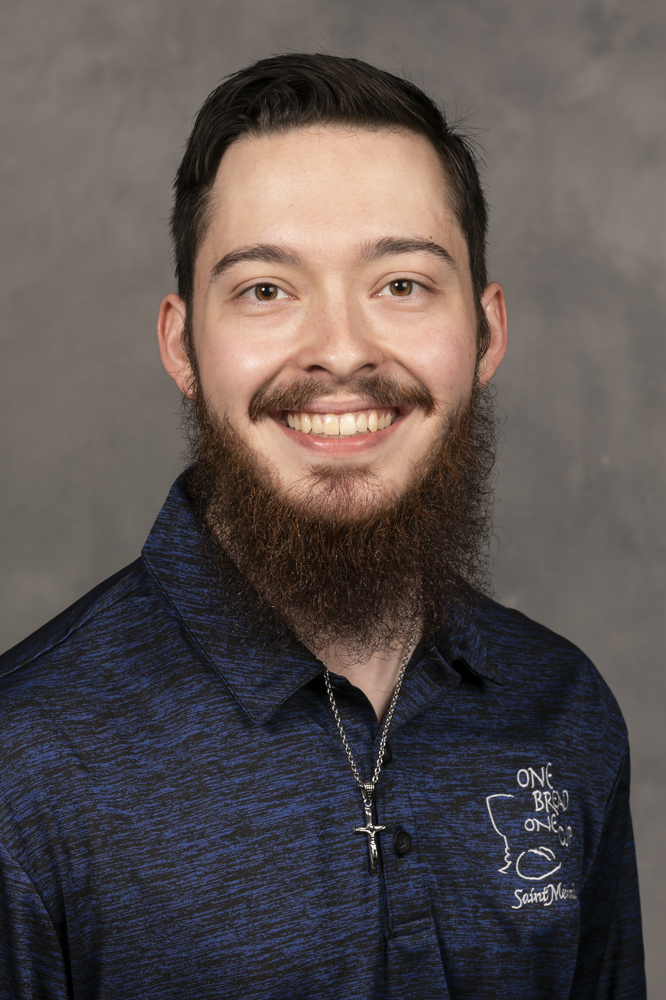

About
I am beyond excited that you are here!
Currently, I am a student at Rose-Hulman Institute of Technology studying Computer Science. Yes, I enjoy learning about software and how computers work, but there are many more areas of life that I am passionate about and if we ever have the pleasure of meeting, I will gladly tell you about all of it! I love discussing ideas!!!
One of my driving passions is telling stories. Whether it's through making videos, taking photos, designing a website, writing, you name it, telling a story brings me so much joy! There is a story behind everything from making breakfast in the morning to a project you have worked on for your entire life, from a stranger you saw in a coffee shop to a lifelong friend or family member. Regardless, I want to tell it!
Above all, what drives me is my relationship with and trust in Christ. If you are to know anything about me, you should know that I am Catholic. I believe that we are all created with a purpose and while I don't know completely what my purpose is, I strive to tell the story that has been created by the One who created it all and depict the beauty of creation in any way that I can. My faith in God is the foundation of all that I do and the reason I do it. None of it would be possible without it.
If you are even remotely interested in telling your story or even just getting to know me, I would love to talk! Let's tell your story together!